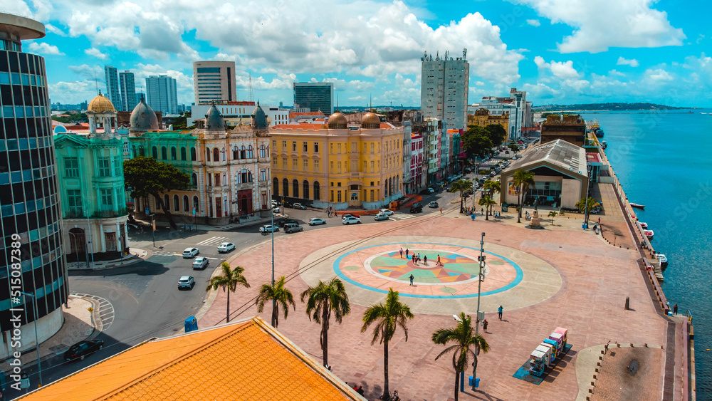
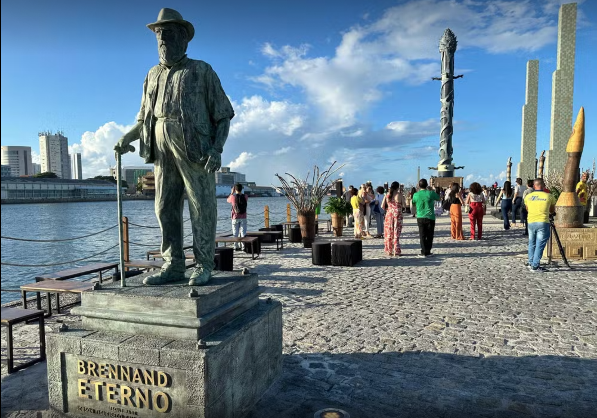
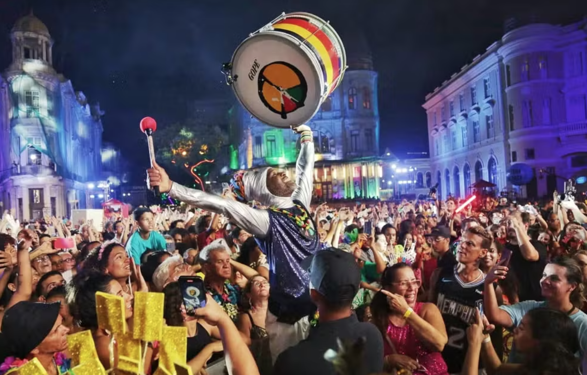

História do Marco Zero
O Marco Zero do Recife é um dos pontos turísticos mais icônicos da cidade. Localizado no bairro do Recife Antigo, ele simboliza o ponto de origem da cidade, de onde todas as distâncias são medidas. É um lugar especial tanto para os moradores quanto para os turistas, por ser o coração da história e da cultura recifense.
Atrações Próximas
Além de sua importância histórica, o Marco Zero é rodeado por outras atrações imperdíveis, como o Parque das Esculturas de Brennand, que fica à vista no mar, e o Centro Cultural Cais do Sertão, onde você pode aprender mais sobre a cultura nordestina.
Eventos e Festividades
O Marco Zero também é palco de grandes eventos e celebrações, como o famoso Carnaval do Recife, onde multidões se reúnem para celebrar a cultura popular. Shows, feiras de artesanato e apresentações artísticas são comuns nesse espaço, tornando-o um local de grande efervescência cultural.
